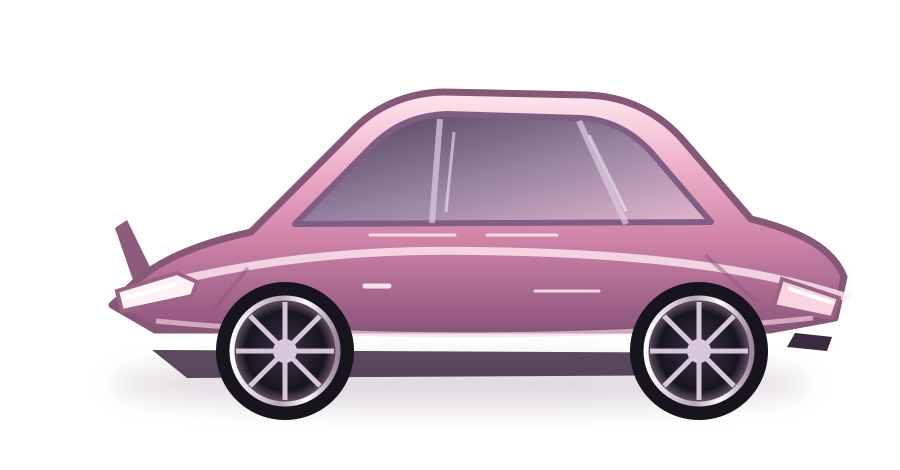

01 / CONNECT
APIs & integrations
REST API concepts, request/response flows, website integrations, JSON, XML, HTTP status codes and troubleshooting.
GOA, INDIA DIGITAL DAYDREAMER
Curious about how things connect.
Here for the code, the curves & the in-between.
I work around technical support, API integrations and troubleshooting — and I'm always finding another layer to explore, from networks and data to Python and the web.

I'm Siddhi — an Electronics & Communication Engineering graduate from Goa, drawn to the way technology quietly makes everything work.
My day-to-day experience is rooted in technical support and API integrations: helping clients with setup, understanding request and response flows, investigating issues, and keeping track of technical tickets and escalations.
Earlier exposure to network operations gave me another angle on connectivity and troubleshooting. These experiences made me want to understand more than just the error message — I want to know what's happening underneath it.
So lately, you'll find me exploring Python, SQL, data analytics, backend concepts, and building small projects to connect the dots.
Different pieces of the same puzzle — how systems talk, how data moves, and how we make sense of it.
01 / CONNECT
REST API concepts, request/response flows, website integrations, JSON, XML, HTTP status codes and troubleshooting.
02 / COMMUNICATE
Networking fundamentals, TCP/IP, DNS, HTTP/HTTPS, connectivity checks and understanding how systems communicate.
03 / MAKE SENSE
Working with structured data, SQL queries, data cleaning, validation, reconciliation and turning information into useful summaries.
04 / BUILD
Strengthening Python fundamentals and using code to automate tasks, explore data and build practical little tools.
A little timeline of the things I've worked with and the perspective they've given me.
CURRENT EXPERIENCE
Supporting client API setup and website integration queries, troubleshooting issues, managing technical tickets, tracking service timelines and coordinating escalations.
CLIENT SUPPORT · API FLOWS · RCA · SLAPREVIOUS EXPERIENCE
Exposure to network operations and monitoring, which strengthened my interest in connectivity, infrastructure and systematic troubleshooting.
NETWORK FUNDAMENTALS · MONITORING · TROUBLESHOOTINGTHE FOUNDATION
Agnel Institute of Technology and Design, Goa. The starting point for my interest in how technology and systems work.
ENGINEERING · AITD · GOASmall, practical projects that help me learn by doing. Click through to see the code and details.
DATA CLEANING · REPORTING
Cleaning messy packaging data, reconciling supplier records, running SQL checks and preparing a Power BI reporting guide.
API MONITORING
A Python tool to monitor endpoints, response times and status codes, with a simple dashboard.
DATA TRANSFORMATION
Parsing and validating XML, transforming records to JSON and comparing data to spot mismatches.
AUTOMATION
A small project for collecting and organising job information and keeping an application tracker structured.
My personality has a few tabs open at all times. There's usually a car rabbit hole, a late-night playlist, and about seventeen things I'm curious to learn next.
Design, details, engines, the sound of a good drive. I will absolutely stop scrolling for a beautiful car.
🏁The Weeknd on repeat. Synths, midnight moods and songs that make a long drive feel cinematic.
MY SOUNDTRACK ↗Learning something new, going down a research rabbit hole, or finding a better way to solve a problem.
06 YOUR TURN
A project, a tech conversation, a favourite car, or a song I should hear — my inbox is open for a hello.